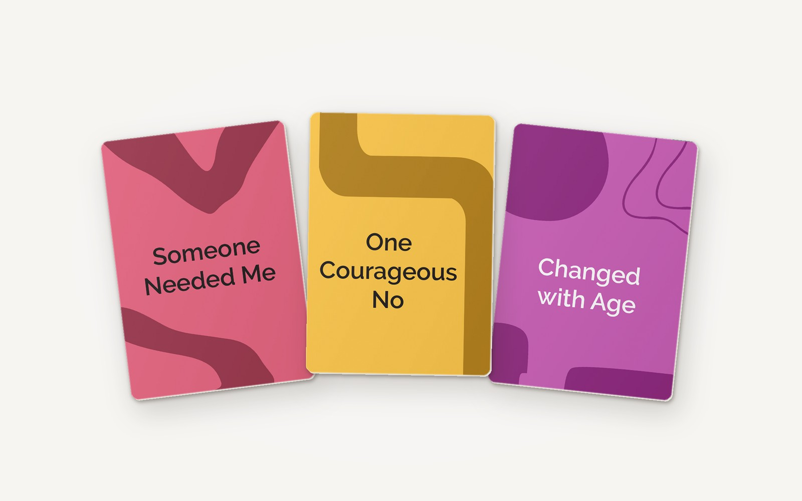
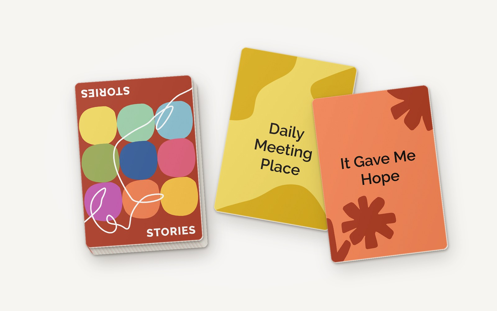

A life change rarely changes one thing.
Midstream helps people see what else it touches.
A four-week program for people in midlife and later life, to understand what a transition is changing in their lives and decide what to do next.
Nine currents run under every concern. Choose one to see the card behind it, and the question it becomes for Robert.
After Robert’s knee surgery, his son hired a lawn service. Robert keeps saying they cut it all wrong, and his family hears a complaint about grass.
For forty years he looked after the house. Fixing things was how he cared for his family, and how he knew he was useful. People often cannot see which part of a change is hurting.
Midstream does not guess. Over four weekly conversations, its interviewer follows each current with questions built from a research-based card deck. Robert decides what the patterns mean.
The program
Four conversations. A fuller picture.
The model
A structured AI system, with the person at the center.
Research foundation
Grounded in research on self-perceptions of aging.
Midstream builds on HCI research with older adults, including reflection cards developed and tested in people’s homes, and extends it to broader life transitions.

Help shape Midstream.
Midstream is in development. To hear about its progress or future chances to give feedback, write to [CONTACT EMAIL].
The program
Four weeks to explore what is changing.
One conversation a week, by voice or text. The interviewer follows what the person brings up and keeps track of which of the nine parts of life have come up. By the fourth session, it has covered all nine. Each session ends with a small step the person chooses, and nothing is interpreted before then.
One possible path · following Robert
There is no fixed order. Another person’s four sessions would reach the nine parts in a different sequence, following what they talk about. Session length and number of questions will be tested. A facilitator can join for people who want human support.
Following Robert · week 1
Every question starts from what he said.
The interviewer stays with the lawn. Each card gives it a new angle on the same concern: what the yard meant to him, who he saw because of it, how his days have changed.
It does not interpret yet, and it ends on time.
Illustrative dialogue, not a transcript from a participant.
What the person keeps
A transition map they can revise.
At the end of week 4, the person receives a summary of what they discussed, the patterns they confirmed, and possible next steps. They can share it with a counsellor or someone they trust.
Later, an optional companion app could support check-ins, keeping only the context the person chooses to save.
The model
General chatbots answer the question you asked.
Robert types: “My son hired a lawn service while I was recovering. They cut it all wrong, and nobody listens when I say so.”
That sounds frustrating! A few ideas:
1. Give the service written instructions on mowing height and edging.
2. Ask your son for their number so you can speak to them directly.
3. If it continues, consider switching providers.
A well-kept lawn can make a big difference to how home feels!
“Before the surgery, who looked after the lawn? What did it mean to you to be the one doing it?”
No advice yet. Over four weeks, Midstream asks around thirty questions like this, each starting from what Robert has said and each opening a different part of his life. Only then does it offer a reading, and Robert decides whether it is right.
Both responses are illustrative, written to show the difference in approach. They are not a controlled comparison.
How it works
Three agents, and the person in the middle.
The interviewer, analyzer and recommender are proposed functions, planned as models fine-tuned from open models. None of them is built or evaluated yet.
Why a different tool
What generic AI tends to do, and what Midstream does instead.
Our commitments
What Midstream will not do.
Research
Nine parts of how we see ourselves aging.
How people see their own aging is linked to their physical, emotional and cognitive wellbeing in later life. These views take shape during transitions: leaving work, an emptier home, caring for a parent, a change in health.
Research on self-perceptions of aging describes nine aspects. Midstream covers all nine, so the conversation reaches the parts of life a concern touches, even when the person does not name them.
The cards
The cards are the interviewer’s script.
Midstream is built on a deck of reflection cards developed and tested in research with older adults. Each card belongs to one of the nine aspects.
The person never draws a card. The interviewer reads the card, then writes a question for this person, using what they have already said. This keeps Midstream from asking random questions.

A card becomes a question
Limits
Where the research ends and the product begins.
The nine aspects come from aging research. Using them for other transitions, the agent workflow, and any claim about better clarity or decisions all still need testing.
The aspects organize a conversation. They are not a clinical or diagnostic instrument.
The plan
Developed by Neeta Khanuja, designer and HCI researcher · neetakhanuja.com